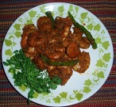

Chingudi Chadchadi

Description
With the famous Chilka lake and a good number of river based water resources in Odisha, prawn is a commonly available favorite for the lovers of non-vegetarian food.Here is a recipe for preparing crispy ''chadchadi' out of the prawn.
Ingridents
250 gm tiny prawns with shell (chhota chingudi)
3 teaspoon mustard paste (sorisha, rasuna, lanka bata)
(prepare by grinding mustard, garlic and red chilly)
3 green chillies (kancha lanka)
½ teaspoon turmeric powder (haladi gunda)
2 tablespoon mustard oil (sorisha tela)
Salt to taste (luna)
Steps
- Clean the tiny prawns but do not remove the shells
- Take the prawns in a kadhai or frying pan
- Add the mustard paste to it
- Also the turmeric powder, green chillies and salt
- Then add the mustard oil along with 1/3 cup of water
- mix well
- Put the frying pan on medium flame
- stir frequently
- Cook until it all becomes dry
- Serve with hot rice